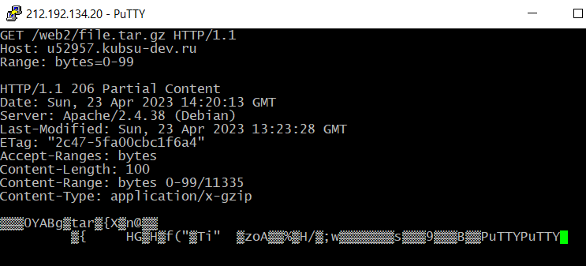

Создание соединения c хостом kubsu-dev.ru по стандартному порту 80 в протокле сетевой печати RAW с помощью программы Putty
Получение главной страницы сайта kubsu-dev.ru методом GET по протоколу HTTP 1.0
По умолчанию сервер отвечает по протоколу HTTP 1.1
Получение внутренней страницы сайта методом GET по протоколу HTTP 1.1
Получение информации о файле file.tar.gz. Для получения информации о файле был использован HEAD запрос.
Данная информация содержится в заголовке ответа в графе "Content-Length" и состовляет 11335 байт
Определение медиатипа ресурса image.png расположенного на удаленном сервере. Для определения медиатипа был использован HEAD запрос
Данная информация содержится в заголовке ответа в графе "Content-Type"
Отправка комментария на удаленный сервер.
Для отправки комментария был использован POST запрос в теле которого был указан сам комментарий.
В ответе от сервера был получен отправленный комментарий, а также строка с текстом Hello world
Получение первых 100 байт из файла file.tar.gz.
Для их получения был использован GET запрос с заголовком Range
В заголовке Range указано что нужно получить именно первые 100 байт из файла

Определяем кодировку ресурса /index.php в заголовке ответа Content-Type с помощью метода HEAD